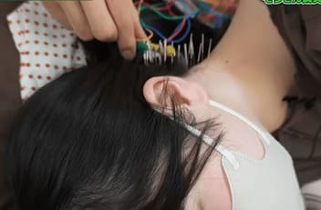
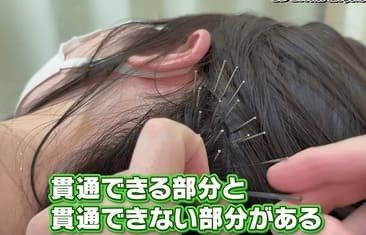
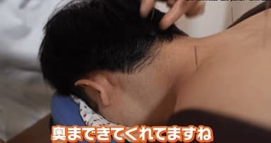
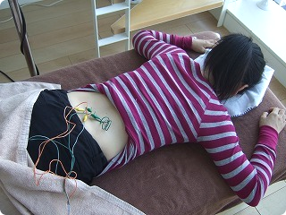

首こりの鍼灸
放置するとストレートネックやヘルニア・めまいに進む首こりを、多方向の深層筋鍼灸で取りこぼしなく整える解説。
まず知っておきたい要点と改善の流れ
デスクワークやスマホによる不良姿勢で首の筋肉が慢性的に緊張・血行不良を起こした状態です。首こりを放置すると、寝違え・ストレートネック・頚椎症・頚椎椎間板ヘルニアなど、より深刻な神経症状の入り口になりやすいため早めのケアが重要です。（公式解説）
このようなお悩みはありませんか？
- ✓首全体が詰まったように重だるく、上を向いたり振り向いたりすると痛い
- ✓寝ても首の疲れが取れず、仕事中も集中できない
- ✓首こりに伴って頭痛・めまい・急な吐き気・手のしびれが出ることがある
- ✓薬や電気・温熱だけでは根本的に楽にならない
当院の施術アプローチ・改善の流れ
なぜ鍼灸で改善へ向かうのか？（作用機序の図解）
首こりに対する鍼灸は、トリガーポイント解放と疼痛抑制系の作用機序を通じて、お体本来の回復力を引き出します。

手技では届きにくい深層筋の硬結（トリガーポイント）へ繊細な鍼で直接刺激を届けます。
CGRPや一酸化窒素の放出により微小血管が拡張し、滞っていた発痛物質の洗い流しを促します。
脊髄後角で痛み信号を遮断し、脳幹からの内因性鎮痛物質（エンドルフィン等）の働きを高めます。
防御性の筋スパズムが解け、関節可動域と本来の動きやすさが段階的に回復します。
院長YouTube解説・関連動画
遠方からお越しのIさんの場合

・症状の経過は？
仕事が忙しくて悪化した。前回までは痺れる痛みが今は凝りのような痛みに変わった。手の痺れはない。首を通り越して喉まで凝ってる感覚。
・首こりは日常生活でも辛い？
朝起きた時から辛く、肩も凝っている。
・良くなっている実感はある？
痛みの種類が変わってきて初期の頃の痺れる感じは減ってきた。今はこりを感じる痛みになったので良くなっているのかなとは思う。
・来院のきっかけ
YouTube。
・鍼が刺さる時の感覚は？
こりに刺さっている感覚。
鍼で一番良くないのは何も変わらないことです。症状のある場所は鍼を刺すと必ず変わるため、自己感覚が変わらないということは原因が間違っているということです。今回は悪いところが残っているだけのため経過は良好です。
悪いところが深いため鍼を刺した時もゴリゴリしています。右首がつらすぎて痛みの左右差を取りきらないともみほぐしても根本的に完全に回復はしません。
長時間座っていると鎖骨も突っ張る感じがある原因は、首が悪くて神経を圧迫していることです。鎖骨周辺が悪いわけではなく首から痛みが降りてきているのです。
食いしばりもあるとのことでしたが、首が楽になれば食いしばりも改善します。食いしばりがあることでこりが生まれる人も、こりがあるから食いしばる人もいます。
今回は本来１箇所に２〜３本の鍼を刺すところ、１箇所に１６本刺して施術を行いました。悪いところを切り刻んでいく施術です。首を中心に鍼を行い、痛みの根本的な改善を図りました。首のストレッチやマッサージはお休みしていただくと効果が出やすいためぜひお休みしてほしいと思います。

施術を受ける前は座るのもきつかったが、施術して忙しい仕事にも耐えられるくらい座れるようになった。
カフェに行くと座るのが辛くて行けなかったがカフェにもたくさん行けるようになった。座っていると痛くなるが痛くなっても痛みが引くのが早くなった。
調子は初期よりだいぶマシにはなったがデスクワークなので首のキツさは残っているとのことです。
Iさんの体を見るとよくなってはいるが、悪いところを根こそぎ取ることができていません。痛い場所が少しずつずれていて、悪いところを施術して変化しても撮り損ねた場所がまた顔を出す印象です。
頭蓋骨の際の際まで入れて施術しています。Iさんの場合は首の付け根が違う組織に変わっています。筋肉が靭化化しており、以前に比べてポイント化しているためきちんと刺激をしないと良くなりにくいです。
首には主に小後頭神経、大後頭神経、内頸動脈、稚骨動脈などの大事な神経血管が通っているため、傷つけないように行います。
頭蓋骨が貫通できる人が一定層います。院長のみた中では今2人しかいませんが、Iさんは3人目の可能性があります。本来頭蓋骨と筋肉の際を狙って鍼を入れて深いところを狙いますが、今回の施術は頭蓋骨に直接入れるイメージです。
🎥 他のYouTube切り抜き・解説を読む（あと3件）▼
首の強烈なこりに悩んでいる30代男性Aさんの場合
・どのような症状か？
首の強烈なこり。肩こり、食いしばり。頭痛は右側が多い。自分でもケアはするがマッサージでも届かない。何回か他で鍼も受けたが改善というよりは一時的なものになってしまった。脱毛の仕事をしてるので常に前傾姿勢で目も疲れるし眼精疲労で限界。
・足が痺れたり手が痺れたりのような細かい症状はないか？
チアリーディングをしていて、手の痺れが時々起こる。
・始めて施術を受けた感想
今までの鍼灸とは全く違う感覚。いつもはピンポイントに押されているだけの感覚だが刺されたところが一帯全部押されている感覚で効いている感覚になった。言葉で言えないような独特な感覚だが、しっかり効いている感覚がすごく強い。次に期待できる施術だと思った。
体を確認したところ、肩甲骨の動きが本来の形よりは鈍くなっていました。
首は極端に悪くなく、肩甲骨の動きが悪くて引っ張られて首がしんどいと思わせられている状態だったため、施術過程で鍼によって筋繊維に微細な損傷を起こしました。その修復過程で筋肉痛のような反応が起こることもあります。これは、人間の体は凝りすぎると瘢痕化といいケロイドのようになりだるい感覚になるため、切り刻んで再生させて落ち着かせる施術です。
当院では自律神経免疫学で有名な福田安保理論と経頭蓋直流電木刺激法を組み合わせた独自の鍼灸を行っています。そのため、Aさんにも電気を流す施術を行いました。
本日は1回目の施術だったため、首、肩、頭部を中心に鍼をし痛みの根源的な原因の改善を行いました。
ぜひ鍼で施術を行った筋肉の超再生を促すことで回復を早めるためにタンパク質をとってほしいと思います。
20代女性のAさんの場合
・1番辛いところ
肩。両肩の膨らんでいるところが気になる。次に腰。偏頭痛もあり、気圧によって低くなると立っていられなくなる。全体的にズーンとくる痛みで、生理痛もひどくてロキソニンを飲む時もある。
・鍼の経験
ある。直近で半年前に受けた。
・きっかけ
学生の頃から腰痛や肩こりはあったが、1歳の娘を抱っこしようと屈んだ時にぎっくり腰みたいになり20代でこうなることにショックを受けていた時、TikTokで流れてきて興味を持った。
・施術の感想
近くのところは気持ちいいくらいの感覚だったが、銀座そうぜん鍼灸院はは痛くて根本的に改善してくれている感じがして気持ちが良かった。
女性ホルモンや神経や脳などいろいろな原因がありますが、Aさんの場合は凝っている場所が悪い場所です。
当院では硬くても姿勢が悪くても良いです。ただ症状がない体を目指していきます。Aさんの体は非常に綺麗で筋肉が硬くなって起こる現象は何もありませんでした。トリガーポイントという筋肉の中にできる凝りから慢性痛が発症する状態だけが問題です。
マッサージの揉み方にもよります。ねじ切るやり方だと起きやすいこの慢性痛が起きやすいです。年齢で考えると筋肉が悪すぎるため、マッサージの弊害の可能性もあります。ねじ切るやり方のマッサージは筋肉内で瘢痕ができやすいです。これは鍼とはまた少し違います。鍼は切るエリアが小さく悪いエリアにピンポイントに施術しますが、マッサージの場合は広いエリアのため一時的に改善しても瘢痕化しやすいのです。
だるさや重たさが取れるように仕向けたため、経過を見てほしいと思います。
上を向けない首こりのSさんの場合

ここ２〜３週間首が全体的に辛く、筋と上の部分が詰まっている感じがする。寝てても首が楽にならなく、仕事中も気が散って辛かった。肩は普段から辛いが鍼を受けて気にならなくなった。腰も痛くて、逆流性食道炎の症状もある。
・鍼の経験
ある。5年くらい前から辛い時に10回くらい行った。
・施術後と前の体の状態の変化
首が余韻があってわからないが楽になった感じがする。上を向いた時の向ける角度が上がった。電気は初めてだったが気持ちよくて心が落ち着いた感じがする。
・他院との違い
自覚症状のある辛いところを集中的に狙ってくれるのが印象的だった。やって欲しい場所以外も全体的にやる鍼灸院が多いが、首が辛かったので首をほぐしてもらえたのでありがたかった。
逆流性食道炎ではなく、胃カメラをしても正常なのに不快感があり、胃酸が上がってくる感じが出る胃食道逆流症というものもある。この場合はアプローチ方法が違うため、その場合であることも視野に入れて施術を行います。
Sさんの場合は首肩自体は極端に悪くなく背骨側の小さな筋肉が張っている状態です。どこががずれている、こりがあるなどではなく細かい悪いところが残っているのです。
首はさまざまな方向から筋肉がついているため裏から横に刺激していき、取りこぼしなく全部狙います。施術時に多く汗をかいていた印象があるSさんですが、首が改善すれば汗のかき方も変わります。生理的な現象で汗が多い場合は汗をかきにくくなったり止まったりするのです。
腰は悪いと思っていなかったようですが、反った時につっかえる感じが減ったという感想をいただきました。
こちらのページもよく読まれています！

首・肩・上腕のツボ図解とセルフケア
実際の施術ではお一人おひとりの体質・症状に合わせて選穴しますが、首・肩・上腕（肩関節・頸椎・肩甲帯）の筋骨格系トラブルの臨床でよく用いられる代表的なツボの目安です。

📌 代表的なツボの詳細一覧表を開く（6穴） ▼
| ツボ名 | 位置の目安 | 主な狙い | セルフケアの注意点 |
|---|---|---|---|
| 肩髃（けんぐう） | 腕を横に挙げたときに肩の前の角にできるくぼみ | 上腕二頭筋長頭腱炎・五十肩・肩関節周囲の痛みと可動域改善 | 炎症や夜間痛が強い時期は強く揉み込まず、温めや軽い圧迫に留めます。 |
| 臂臑（ひじゅ） | 肩の三角筋の先端（腕の外側の境目のくぼみ） | 上腕の重だるさ・腕を上げる際の引っかかり感・肩関節の負担軽減 | 骨に向かって垂直に3〜5秒じんわり押す程度が安全です。 |
| 天宗（てんそう） | 肩甲骨のほぼ中央、押すと響くくぼみ | 肩甲骨周囲の深層筋（棘下筋）の緊張緩和・腕への放散痛ケア | テニスボール等で強く押しすぎず、心地よい響きで止めます。 |
| 肩井（けんせい） | 首の付け根と肩先を結んだ線の中央 | 僧帽筋の過緊張緩和・首肩のこりや張り改善 | 妊娠中の方は強い刺激を避け、優しく温める程度にしてください。 |
| 風池（ふうち） | 後頭部の生え際、耳の後ろの骨と首筋の間のくぼみ | 頸椎周囲の深層筋緊張・首こり・肩腕への神経負担緩和 | 親指で頭の中心に向かって優しく支えるように押します。 |
| 曲池（きょくち） | 肘を曲げたときにできる外側のシワの先端 | 上腕〜前腕の筋膜連動の調整・肩肘の炎症・だるさ軽減 | 反対側の親指でゆっくり5秒押して離すリズムで行います。 |
国際査読論文の科学的エビデンス
国際的な医学データベース（PubMed・Cochrane等）で報告されている首・肩・上腕（肩関節・頸椎・肩甲帯）の筋骨格系トラブル領域の代表的な査読済み鍼灸研究をまとめています（標準治療との併用や研究上の限界を含めて正確に掲載）。
📚 査読論文データ・PubMed出典リンクを開く（4件） ▼
| 年・研究デザイン | 対象・規模 | 主な結果 | 限界・出典 |
|---|---|---|---|
| 2018年 IPDメタ解析 | 慢性筋骨格痛・頭痛 39 RCTs（n=20,827） | 全領域でシャム鍼・無治療比とも有意優位（P<0.001）、1年後も効果低下約15%で持続。 | 対照設定により効果量変動。 J Pain (PMID: 29198932) |
| 2020年 Cochraneレビュー | 慢性非特異的腰痛 33 RCTs（n=8,270） | 無治療比で直後疼痛（MD -20.32）と機能（SMD -0.53）が臨床的に有意改善。有害事象は軽微。 | 施術者盲検化不可・確実性は中等度〜非常に低。 Cochrane (PMID: 33306198) |
| 2024年 多施設RCT | 慢性坐骨神経痛 216名（6病院・52週追跡） | 4週時点の下肢痛VAS減少30.8mm vs 14.9mm（差-16.0mm, P<0.001）、52週後も持続。 | 中国3次病院限定・施術者盲検化不可。 JAMA Intern Med (PMID: 39401008) |
| 2016年 メタ解析 | 変形性膝関節症 10 RCTs | 短期（13週）で疼痛（WMD -1.24, p<0.001）と機能（p<0.001）が有意改善、26週も機能維持（p=0.016）。 | 試験間の異質性が高く運動療法併用が推奨。 JBJS Am (PMID: 27655986) |
参考文献・出典
- 銀座そうぜん鍼灸院「首こりの公式解説ページ」
- 2018年 IPDメタ解析（慢性筋骨格痛・頭痛 39 RCTs（n=20,827））— J Pain (PMID: 29198932)
- 2020年 Cochraneレビュー（慢性非特異的腰痛 33 RCTs（n=8,270））— Cochrane (PMID: 33306198)
- 2024年 多施設RCT（慢性坐骨神経痛 216名（6病院・52週追跡））— JAMA Intern Med (PMID: 39401008)
- 2016年 メタ解析（変形性膝関節症 10 RCTs）— JBJS Am (PMID: 27655986)
よくある質問（FAQ）
Q. 首こりを放置するとどうなりますか？▼
Q. 急な吐き気も首こりが関係しますか？▼
Q. 上を向くと詰まる感じがありますが改善しますか？▼
あわせて読まれる関連疾患（筋肉、骨のお悩み）
お尻から足後ろ側へ広がる痛みやしびれ。原因を見極め、腰・臀部・股関節の深層筋へ的確にアプローチします。
40〜60代に多い肩の激痛・可動域制限（五十肩）を、炎症期と拘縮期の見極めと鍼灸・全身バランス調整で改善する解説。
頭痛・吐き気を生む慢性肩こりに対し、深層筋へのトリガーポイント鍼灸と脳・自律神経ケアで根本改善する解説。
HTLV-1ウイルス感染者の一部に発症し、脊髄の炎症により両下肢のつっぱり・歩行障害や排尿障害が徐々に進む疾患です。
成長期の中高生がスポーツ中の急激な筋収縮により、骨盤の骨端線付着部で骨の一部が剥がれて起こる骨折です。
免疫系が自身の筋組織を攻撃して炎症と変性を起こし、対称性の筋力低下や筋痛をきたす全身性のリウマチ性疾患群です。
おひとりで悩まず、まずはご相談ください
銀座本院・川口・大宮・横浜・博多・田無の各院でご予約を承っております。